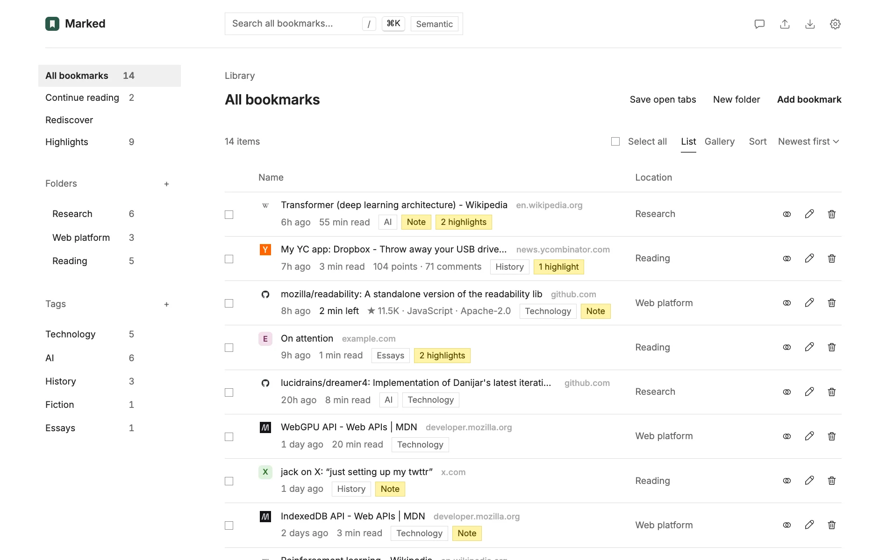
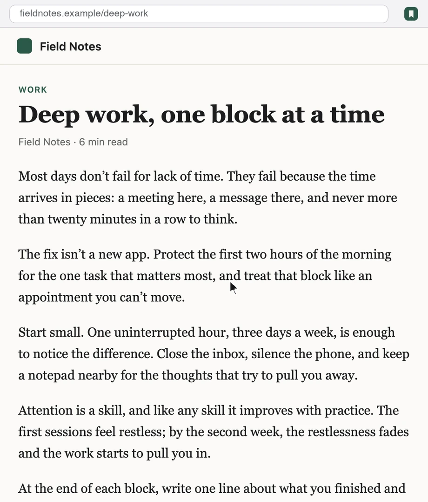
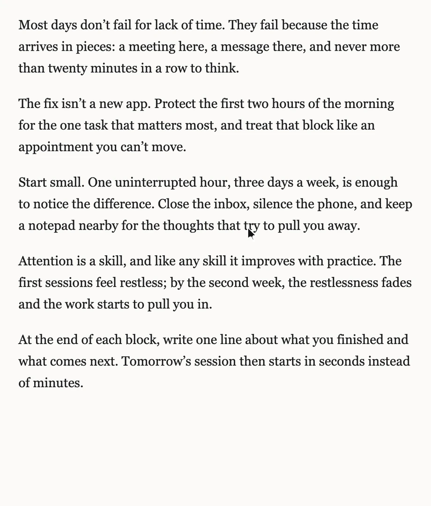
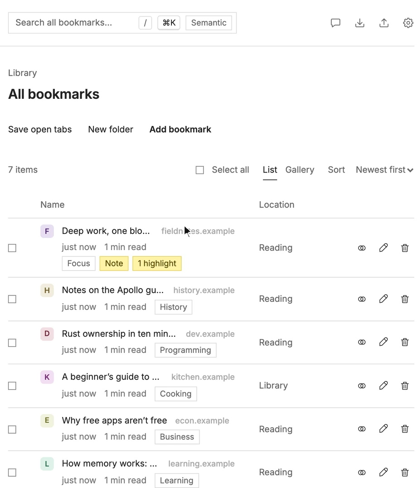
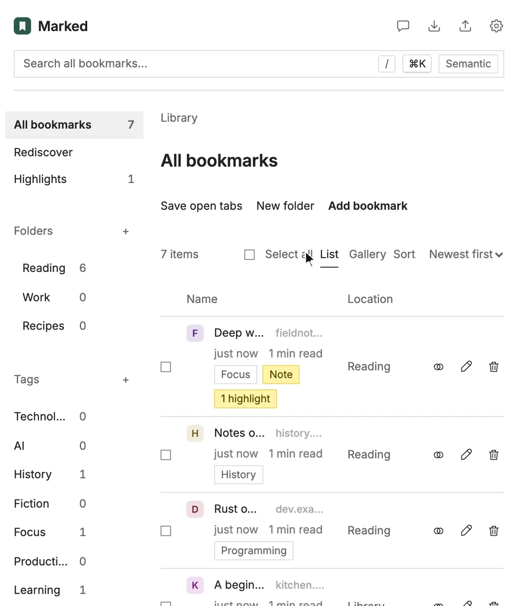

Marked
A local-first bookmark library for Chrome and Firefox.
Save pages, posts from X, and the sentences that mattered, with your own notes and tags, read them in a clean reader, and ask a private, on-device AI how it all connects.
Or build it yourself from source:
git clone https://github.com/shinoss/marked.git
cd marked
npm ci && npm run bundleChrome: chrome://extensions → Developer mode → Load unpacked → the src folder
Firefox: about:debugging → This Firefox → Load Temporary Add-on → src/manifest.json

Browser bookmarks are a pile of titles you never open again. Marked keeps the why: your note, the passage you highlighted, a short abstract of the page, and tags. It all stays in your browser.
Save any page
Click the Marked button in your toolbar on any page you want to keep. Name it, pick a folder, and add tags or a note, right there on the page.
Or right-click the page and choose Add to Marked, or press Alt+Shift+M.

Highlight what matters
Select text on any page, then click the Highlight button that pops up. Pick one of five colors and add a note if you like. Your highlights are still there when you come back.
Or press Alt+Shift+H. Every highlight also waits in one list, to search or filter by color, site, or date.

Find it again
Search every word of the pages you’ve saved, not just their titles, and see the passage that matched. Open any of them in a clean copy to read, even after the page is gone.
Or type mk and a space in your address bar, or press ⌘+K (Ctrl+K) to jump to any bookmark, folder, or tag.

Bring your bookmarks
Click Import to bring in your browser’s bookmarks, a bookmarks file, or everything you’ve bookmarked on X. Nothing in your browser changes.
Import again anytime and only what’s new comes in. Export, next to it, makes a backup whenever you want one.

What else it does
-
A reader for every page
Marked keeps the text of what you save. Read it in a clean copy, in your font and a light, sepia, or dark page, even after the original is gone.
-
Posts from X
Right-click a post to save it, with the author’s thread, or bring in every post you’ve bookmarked on X.
-
What’s related
More like… shows the bookmarks that share a page’s telling words, and the Marked button counts them as you browse.
-
Jump anywhere
Press ⌘+K to reach any bookmark, folder, tag, or command, and ? for every shortcut.
-
Keep it fresh
Continue reading picks up where you stopped, Rediscover brings back older finds, and Duplicates merges repeats, notes and all.
-
Tabs into folders
Save open tabs keeps a whole window as a folder, and Open all brings it back.
-
Ask your bookmarks
On-device chat answers questions about your library, with links to your bookmarks. It runs on your GPU after a one-time download, and nothing leaves your device.
-
Search by meaning
Optional: with your own TypeSafe Jev key, Semantic ranks bookmarks by meaning. Nothing is sent until you click it.
-
Yours to keep
Export a full backup, a standard bookmarks file for any browser, or your notes and highlights as Markdown.
Your library stays in your browser.
No account, no server of ours, no analytics. Marked only contacts:
- Hugging FaceWhen you download the chat model.
- XTo show posts in the gallery, and to read your X bookmarks when you import them.
- Hacker News and GitHubTheir public APIs, for a card and the discussion when you save one of their pages or download its text. No cookies.
- TypeSafeWith your own key. When you click Semantic: your query and each bookmark’s title and abstract, plus notes and highlights only if you turn them on; never addresses, folders, or tags. When you choose to tag an import from X: each new post’s text, plus any post it quotes, image descriptions and link preview, and the names of your tags.
- The sites you bookmarkedWhen you download page text for older bookmarks. No cookies.
Marked asks before it reads the pages you visit, in its own page, not in the browser’s install prompt. With it, Marked shows the Highlight button when you select text, brings back your highlights and ✓ on pages you revisit, and counts related bookmarks; saving pages works without it. It never reads what you type into forms, and nothing it reads leaves your device. Read exactly what it reads.
Questions
What do I need?
Desktop Chrome 123+ or Firefox 142+. Add Marked from the Chrome Web Store or Firefox Add-ons. To build it yourself instead, you need Node.js 22+; Firefox removes an add-on loaded that way when it restarts.
Where is my library stored?
In your browser, in Marked’s own storage. Use Export and Import to back it up or move it.
Does it change my browser’s bookmarks?
No. Marked can import them once; after that, the two are separate.
Why does Marked ask to read the pages I visit?
So it can show the Highlight button when you select text, bring back your highlights and ✓ on pages you revisit, count related bookmarks, and keep the text of saved articles you revisit. Save open tabs and downloading text for older bookmarks ask for it when you use them. It asks the first time you open it, not at install, and you can turn it off in Settings → Browsing. Turned off, it leaves every page at once; what you saved stays in Marked.
On each page it reads the title, description, headings, and opening paragraphs to count related bookmarks, and forgets them when you close the tab. It never reads what you type into forms, including passwords, and nothing it reads leaves your device. Without it, you can still save the page you’re on with the Marked button, Add to Marked in the right-click menu, or Alt+Shift+M, and highlight with Alt+Shift+H.
What does local chat need?
WebGPU and a one-time 2.3 GB download from Hugging Face. On a Mac, use Chrome with 16 GB of memory or more. Your bookmarks and questions stay on your device.
Do I need an API key?
No. A TypeSafe Jev key only adds Semantic search, and tagging the posts you import from X.
What shortcuts are there?
/ searches, ⌘+K or Ctrl+K opens the command palette, and ? lists every shortcut. From any page, Alt+Shift+M saves it, Alt+Shift+H highlights the text you selected, and mk in the address bar searches your library. In the reader, H highlights the selection.